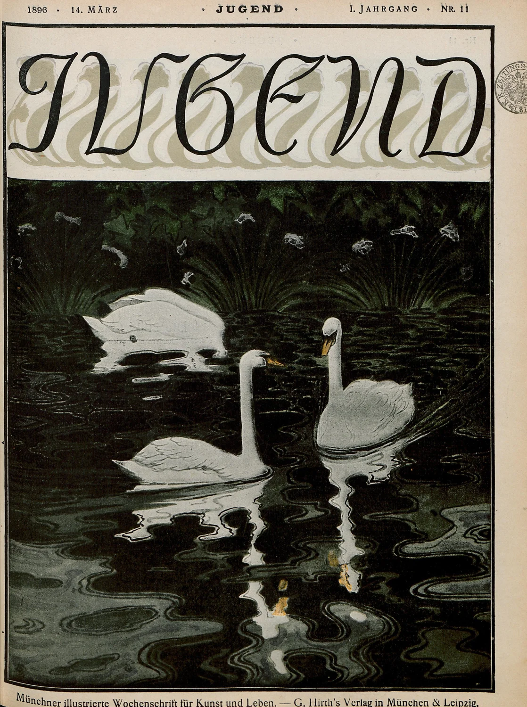
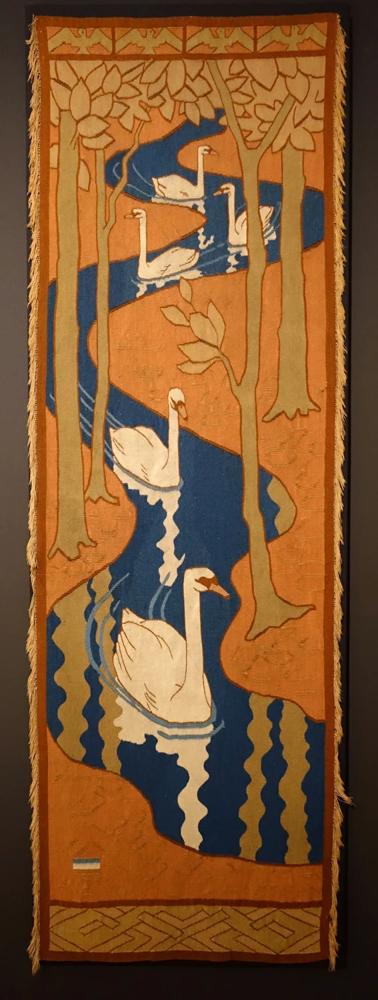
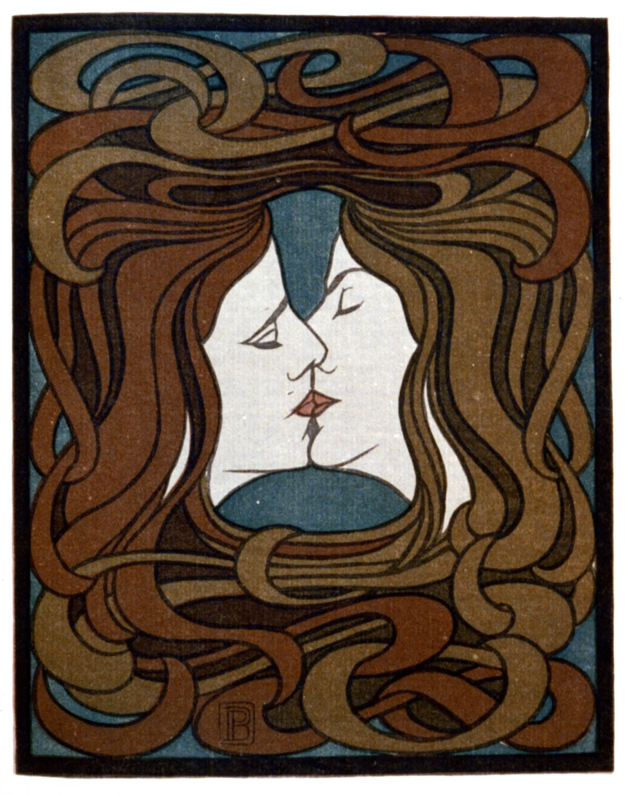
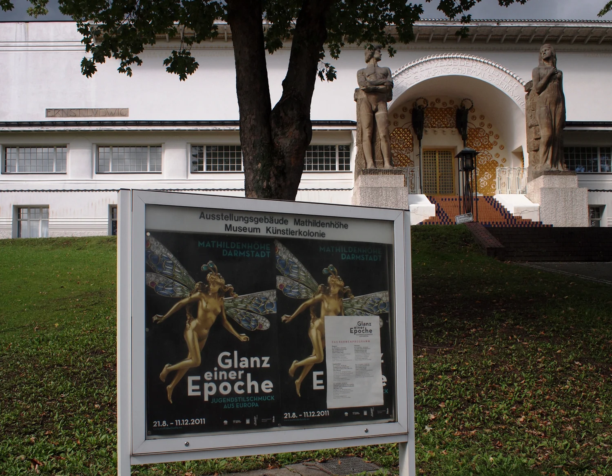

選定理由・代表作
運動名の由来となった雑誌の創刊年の表紙。誌名と絵をひとつの画面として設計した、エックマンの仕事を見られます。
作品・制作の例5件を紹介しています。実作品画像4点、参照・関連画像0点。画像の収集は継続中です。
Art Nouveauの地域的な呼称・展開（独立した別運動として数えない）
Jugendstil
ユーゲントシュティールは、アール・ヌーヴォーのドイツでの呼び名です。
名前のもとになったのは、1896年に始まった雑誌『ユーゲント』。
新しい形を、絵や印刷物だけでなく、建物や暮らしの道具にも広げようとしました。
別の流行がもう一つ生まれた、と数えるのではなく、地域ごとのつながりを見てみましょう。
表紙、織物、版画、建築を制作年の古い順にたどります。
実作品を見る

画像を表示できませんでした。下の出典ページで確認できます。
オットー・エックマン / 1896年
運動名の由来となった雑誌の創刊年の表紙。誌名と絵をひとつの画面として設計した、エックマンの仕事を見られます。
ハイデルベルク大学図書館のデジタル版／Wikimedia Commons
出典で作品・資料を見る ↗Public Domain Mark 1.0
作品の所蔵・権利情報 ↗画像の利用条件 ↗画像全体を縮小しWebPに変換。
実作品を見る

画像を表示できませんでした。下の出典ページで確認できます。
オットー・エックマン（図案）／シェアレベク織物学校（製作） / 1896–1897年
所蔵館がこの様式を象徴するモチーフとして取り上げる白鳥。首のカーブと水面の線が、細長い織物の中で繰り返されます。
写真 Daderot／Wikimedia Commons
出典で作品・資料を見る ↗CC0 1.0
作品の所蔵・権利情報 ↗画像の利用条件 ↗画像全体を縮小しWebPに変換。
実作品を見る

画像を表示できませんでした。下の出典ページで確認できます。
ペーター・ベーレンス / 1898年
ヴィクトリア国立美術館がこの様式の重要作として紹介する版画。二人の輪郭と絡む髪をたどると、曲線が人物も画面全体も形づくっています。
米国議会図書館 Prints and Photographs Division, cph.3b49745／Wikimedia Commons
出典で作品・資料を見る ↗Public Domain Mark 1.0
作品の所蔵・権利情報 ↗画像の利用条件 ↗画像全体を縮小しWebPに変換。
実作品を見る

画像を表示できませんでした。下の出典ページで確認できます。
ヨーゼフ・マリア・オルブリヒ（建築） / 1901年
芸術家村の共同アトリエとして建てられた建物。横に伸びる外壁と、彫刻や金色の装飾が集中した中央入口を見比べられます。
写真 Ikar.us、2011年／Wikimedia Commons。全体を保って縮小しWebPに変換。
出典で作品・資料を見る ↗CC BY 3.0 DE
作品の所蔵・権利情報 ↗画像の利用条件 ↗画像全体を縮小しWebPに変換。
版画
からみ合う髪を曲線の模様として表し、人物の輪郭と平面性を一緒に見られる例。
作品・資料の出典を見る ↗作品名（出典表記）：The Kiss（Der Kuss／接吻）
Peter Behrens（ペーター・ベーレンス） / 1898 / 版画
ポスター
ベルギーの作家がドイツ企業の広告をつくった例です。曲線を使う新しい表現が、国境をこえて広がったことがわかります。
作品・資料の出典を見る ↗作品名（出典表記）：Poster advertising Tropon
Henri van de Velde（アンリ・ヴァン・デ・ヴェルデ） / 1898 / ポスター
建築
芸術家が使う建物にも、新しい形が広がった例です。版画と建築を比べると、活動の幅が見えてきます。
作品・資料の出典を見る ↗作品名（出典表記）：Ernst Ludwig-Haus
Joseph Maria Olbrich（ヨーゼフ・マリア・オルブリヒ）（建築） / 1901 / 建築
雑誌表紙
運動名の由来となった雑誌の創刊年の表紙。誌名と絵をひとつの画面として設計した、エックマンの仕事を見られます。
作品・資料の出典を見る ↗原題：Jugend, Nr. 11 — Umschlag
オットー・エックマン / 1896年 / 雑誌表紙
羊毛の壁掛け
所蔵館がこの様式を象徴するモチーフとして取り上げる白鳥。首のカーブと水面の線が、細長い織物の中で繰り返されます。
作品・資料の出典を見る ↗原題：Fünf Schwäne
オットー・エックマン（図案）／シェアレベク織物学校（製作） / 1896–1897年 / 羊毛の壁掛け
名前は、ミュンヘンで1896年に創刊された雑誌『ユーゲント』に由来します。
雑誌は新しい表現を紹介する場で、展示会や工房も活動を支えました。
一方、ダルムシュタットでは1899年に芸術家村がつくられ、1901年の展覧会で建築や工芸が紹介されました。
雑誌、芸術家村、個々の建物の年は、それぞれ別に覚えます。
決まった色の組み合わせはありません。印刷の色と、建物や工芸の材料の色を分けて見ます。
共通の書体一つで判断せず、作品名や文字と図が置かれた場所を確かめます。
《接吻》では、からみ合う髪が曲線の模様になります。人物を細かく写すより、輪郭と平たい形が強く感じられる例です。
一つの模様だけで判定せず、画面全体や建物全体で形がどう組み合わされるかを見ます。これは観察の手順であり、全作品共通の規則ではありません。
アール・ヌーヴォーは国境をこえた広い呼び名、ユーゲントシュティールはここで扱うドイツでの展開です。
ウィーン分離派は、作品を展示・発表した芸術家の団体。
人や表現のつながりはあっても、この三つを同じ種類の名前として並べたり、互いに無関係な流行として数えたりしません。
本の表紙や包装を見て、文字と絵の曲線がつながっている場所を探してみましょう。飾りが読みやすさや印象をどう変えるかを比べます。
雑誌の表紙、織物、版画、建築を通じて、ドイツ語圏で曲線や植物の形がどう使われたかをたどります。
作品・制作の例5件を紹介しています。実作品画像4点、参照・関連画像0点。画像の収集は継続中です。